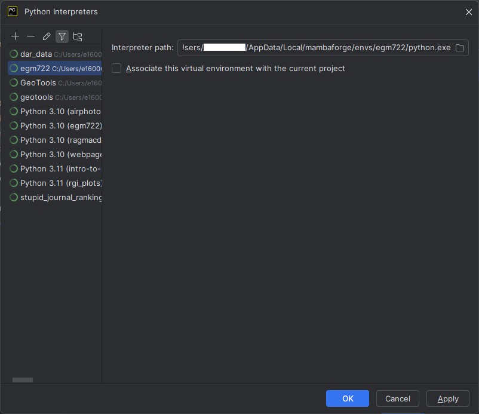

pycharm
Contents
pycharm#
Note
The instructions here are for setting up PyCharm Community Edition. PyCharm is a powerful Integrated Development Environment (IDE) that provides integration with python, conda, and git. In the practicals, you’ll see how you can use it to write, edit, test, and debug your code.
You are not required to use PyCharm - there are many other good, free, options out there, including VS Code and Spyder. Many of the steps for the debugging exercise will be the same, broadly-speaking, for other IDEs. If you do use a different IDE, I will do my best to provide help, but just note that it may be some more work to get set up.
Warning
Many of the instructions and screenshots shown here are for PyCharm CE 2021.3.3, running on Ubuntu Linux 18.04.6.
As such, there may be some slight differences in appearance or menu options between what is shown here and the version you download.
downloading and installing#
To download PyCharm CE, point your browser to https://www.jetbrains.com/pycharm/download/ and select the version for your current operating system (Windows, MacOS, or linux).
Warning
Be sure to download the Community Edition, which is free. If you download the other version, you will need to purchase a license once the free trial expires after 30 days.
Once you have downloaded the installer, follow the instructions in the installation wizard. Once the installation has completed, open PyCharm CE.
creating a new project#
When you first open PyCharm, you should see a screen similar to the following:

Select Create New Project, which will open the following window:

For the location, choose the folder where you have cloned the egm722 repository by clicking on the folder icon
and selecting the folder from the tree (in this example, the folder is located in
/home/bob/Documents/teaching/ulster/egm722/2022/workbooks).
You should also set up a python interpreter for the project - this will enable you to use some of the autocomplete tools when writing code, run scripts within PyCharm, as well as making use of the debugging tools.
Because you have already set up a conda environment, you can choose this interpreter. Next to
Previously configured interpreter, click on the ... button. In the Add Python Interpreter window
that opens up, select Conda Environment, and then Existing environment - you should see something
like the following:

You’ll need to provide the path to the python interpreter that is part of your egm722 conda environment - on
most computers, relative to where you’ve installed Anaconda, this will be:
~/Anaconda3/envs/egm722/bin/python
(or, if you’re on Windows, python.exe). You will also need to supply the path to the conda executable
(program) that’s installed on your computer - again, on most computers, relative to where you’ve installed
Anaconda, this will be:
~/Anaconda3/bin/conda
(or, if you’re on Windows, conda.exe). You can also click the Make available to all projects checkbox,
which will help you more easily add this interpreter to other new projects. Click OK to return to the previous
window.
Once you’ve set the path to the project, and set up the python interpreter, click Create. The following window should pop up:

Select Create from Existing Sources.
the pycharm interface#
Once the new project has been created, you should see something like this:

topics:
the file browser
opening a script
terminal, TODO, python console, etc.
mention git (provide links to further help)
adding an interpreter#
If you didn’t add an interpreter to your project, don’t panic. If you want to add an interpreter to an existing project, or even change the interpreter for the project, there’s a way. In the lower right-hand side of the window, you should see something that says “Python 3.8” (or something similar). Click on this to open the interpreter menu:

Select Add Python Interpreter. In the window that opens up, select Conda Environment, followed by Existing environment - you should see something like the following:
You’ll need to provide the path to the python interpreter that is part of your egm722 conda environment - on
most computers, relative to where you’ve installed Anaconda, this will be:
~/Anaconda3/envs/egm722/bin/python
(or, if you’re on Windows, python.exe). You will also need to supply the path to the conda executable
(program) that’s installed on your computer - again, on most computers, relative to where you’ve installed
Anaconda, this will be:
~/Anaconda3/bin/conda
(or, if you’re on Windows, conda.exe). You can also click the Make available to all projects checkbox, which
will help you more easily add this interpreter to other new projects. Click OK to return to the previous window.
changing the interpreter#
To change which python interpreter your project uses, open the Interpreter menu by clicking on it in the lower right-hand side of the window:
Select Interpreter Settings, which will open the Interpreter Settings window:

To change the interpreter, you can select a different one from the drop menu, or by clicking the gear icon and selecting Show all. This will bring up the following window (note that your list will not be the same as this one):
{kind=link}
Select the desired interpreter from this list. If you don’t see it there, you’ll need to add it using the steps outlined above.